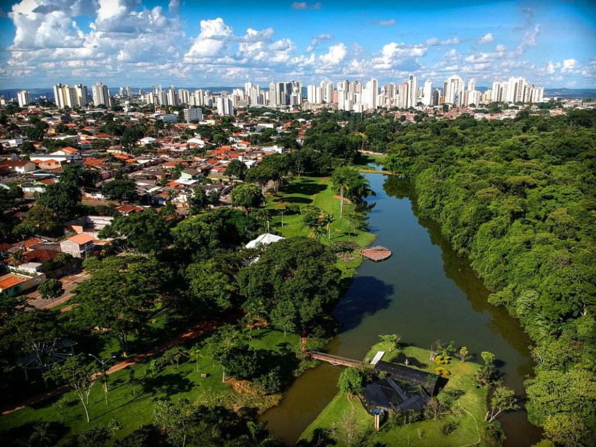

Goiás é um estado marcado pela forte tradição agropecuária, pelo crescimento industrial e por cidades históricas que preservam a cultura colonial brasileira. Sua capital, Goiânia, destaca-se pelo planejamento urbano e pela qualidade de vida, enquanto destinos como Pirenópolis atraem visitantes com arquitetura histórica, cachoeiras e festas tradicionais. A economia goiana possui grande relevância nacional na produção de grãos, carne e mineração, além de um setor de serviços em constante expansão.

Voltar